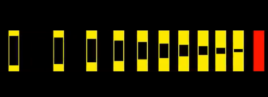
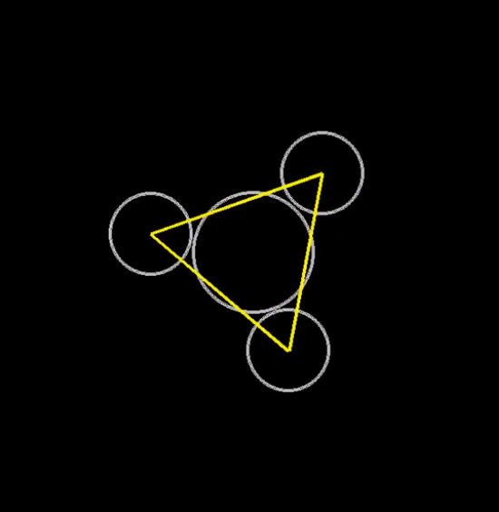
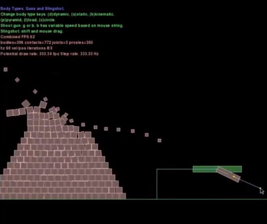
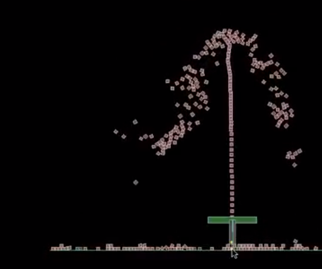
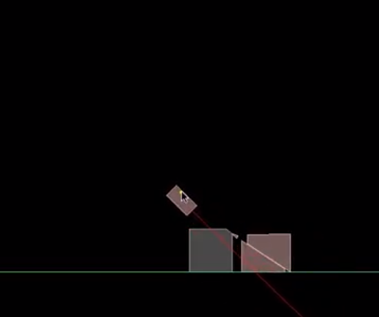

PHY-109-001, #28875, Python 2D Game Prog, J-term 2013.
In effort to promote the course, these video clips were shown in
2012 to the General Physics and Cosmic Universe classes in Olin Hall at
Gustavus Adolphus. Here are links to the flyer,
a one-pager,
course syllabus,
and the physics engine tutorial.
Click to manage cookies. If you accept them, click a video to load; click again to play.
|
 1D-Physics Air TrackThis first video demonstrates 1D collision detection, modeling of forces by gravity and mouse tethers, and user interactions. We use Pygame's capabilities to quickly draw polygons to the screen and listen for keyboard and mouse events. Try running the code on the tutorial page for creamy-smooth rendering. |
|
 2D-Physics Air TableMuch of the algorithmic content of the 1D exercise is extended here with a 2D vector class. Also object-object forces as modeled by springs and dampers are added. Collision detection and penetration corrections are developed for spherical shapes. Limitation of this simple home-brew physics engine are demonstrated with progressively smaller diameter ball-settling tests. Notice the popcorn effect of the smaller balls as they try to settle three balls deep. Finally a 2D grid of balls and springs shows how this basic physics engine can yield realistic results for non-spherical object collisions with walls (looks like a square piece of Jello). |
|
 Pybox2d Guns and StackingHere, the pybox2d port of the Box2D physics engine (of Angry Birds fame) does the computational heavy lifting. This illustrates Box2D's capabilities for general modeling of non-spherical objects. This includes proper handling of contact forces, stacking, and settling behaviors. |
|
 Vertical Bullet StreamA short clip showing a vertical stream of rectangles collapsing onto itself. It acts like a fluid. Also a brief demo of a cursor gun. |
|
 Box CutterThis demo shows a laser box cutter based on the ray casting feature of Box2D. Polygons are segmented based on the intersection points of the ray cast. |